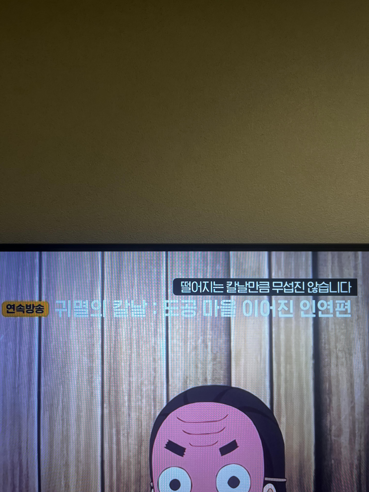
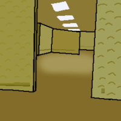
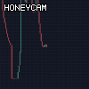

귀멸의 칼날이 무서워?
댓글
아랫공기는 좀 어때요?
제 위에 사람이 있어요?
존나많아요..
238
위에 노란 이미지는 왜 넣은거임
벽이겠지

벽이 느껴지십니까?
귀칼은 진짜 무조건 봐야되는 애니임
살아있네
시장에 피가 낭자하고 공포가 만연하다
크아아악
한강의 호흡


아랫공기는 좀 어때요?
제 위에 사람이 있어요?
존나많아요..
238
위에 노란 이미지는 왜 넣은거임
벽이겠지

벽이 느껴지십니까?
귀칼은 진짜 무조건 봐야되는 애니임
살아있네
시장에 피가 낭자하고 공포가 만연하다
크아아악
한강의 호흡

최회장님 215층에 사람있어요